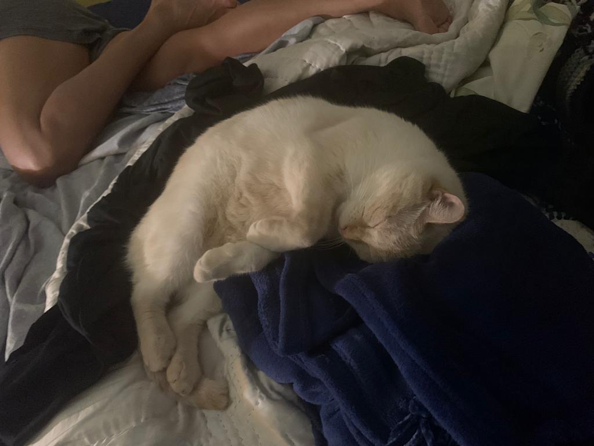

Welcome To: The Chicken's Coop
About me:
Trust me when I say that my head is all kinds of messed up.
I'm honestly not sure whats going on or whats happening to me. Do I have something that I thought was a disproven myth but was really just reclassified? Am I going down the path that I actually want to? My dad and I had a conversation on the way to a kayaking class, and now I think I'm reconsidering my entire career choice.
My dad asked me what fulfills me, and if art was what fulfilled me that was great, but I didn't understand.
I asked him, "What do you mean, fulfills you?"
"What I have found in life is that the happiest people, or the people that are the happiest in general, are not those who pursued a career in what they were good at, but what fulfilled them. Those people are happiest because they are doing something they feel creates something good in the world, whether that be for the whole world in general, for their generation, for their friends, family, or themselves. Those are the people who are happiest. So, what fulfills you?"
And for the first time in my life, my answer was not art.
I am in my fourth year of college, and now I don't know what to do.